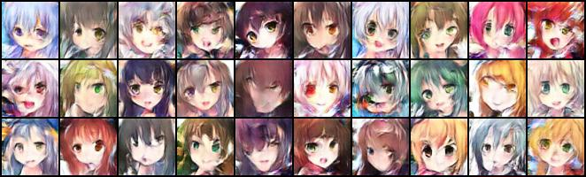
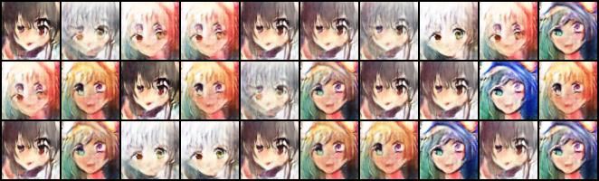

0.1 作業要做什麼
HW06 是一個生成（generation）問題，和前幾份作業的方向正好相反。HW01–HW04 都是「給輸入、猜答案」：給一段數據猜確診率、給一張食物照片猜類別、給一段聲音猜說話者。HW06 沒有答案可以猜：投影片第 5 頁寫的輸入是「random number」，輸出是「anime face」——給一組亂數，畫出一張動漫臉；換一組亂數，就要畫出另一張。最後要交 1000 張生成的圖。
投影片第 4 頁說明了要用的方法：GAN（generative adversarial network，生成對抗網路）由兩個網路組成。生成器（generator，下文常簡寫成 G）負責把亂數變成圖；判別器（discriminator，簡寫成 D）負責看一張圖、判斷它是資料集裡的真圖還是 G 畫的假圖。訓練時兩者輪流更新：D 學著分得更準，G 學著畫得讓 D 分不出來。第 5 頁的實作要求是 DCGAN、WGAN 與 WGAN-GP 三種——範例程式只給了第一種，另外兩種要自己改（第 6、7 章）。
兩個評分指標：FID 與 AFD（投影片第 6–7 頁）
分類問題可以數「答對幾題」，生成問題沒有標準答案，要怎麼打分數？助教用了兩個指標：
- FID（Fréchet Inception Distance）：把真圖和你生成的圖都送進一個預先訓練好的影像網路（Inception），各取出一大把特徵向量，比較兩堆特徵的分布有多接近——平均值差多少、散布的形狀差多少。越小越好；生成圖和真圖分布一模一樣時是 0。
- AFD（anime face detection rate）：用一個動漫臉偵測器掃你交的 1000 張圖，算有多少比例偵測得到臉。越大越好。
FID 同時在乎「像不像」和「夠不夠多樣」：如果 G 只會畫同一張很像的臉，它的特徵全擠在一點，分布的散布形狀和真圖差很遠，FID 一樣會很大。這個性質在第 5 章會變得很重要。兩個指標的細節、本書怎麼在本機量它們，是第 4 章的主題。
四條基準線（投影片第 16–17 頁）
| 基準線 | FID | AFD | 投影片建議的做法 | 估計時間 |
|---|---|---|---|---|
| Simple | ≤ 30000 | ≥ 0 | 照跑範例程式（DCGAN） | < 1 小時 |
| Medium | ≤ 12000 | ≥ 0.4 | DCGAN，多跑幾個 epoch | 1–1.5 小時 |
| Strong | ≤ 10000 | ≥ 0.5 | 改成 WGAN 或 WGAN-GP | 2–3 小時 |
| Boss | ≤ 9000 | ≥ 0.6 | StyleGAN | < 5 小時 |
注意 FID 的數字是上萬。一般論文裡報的 FID 是幾到幾百，本書在本機量到的也在 50–400 之間。助教的評分系統（JudgeBoi）怎麼算出上萬的數字沒有公開，可能乘了某個倍數、可能用了不同的特徵或樣本數，所以本書量的 FID 不能拿來對照這張表；AFD 也一樣，本書用的偵測器和助教的不同（第 4 章會看到，連真圖都只有 54% 被它認出來）。本書的數字只用來比較「同一把尺量出來，哪個模型比較好」。
交什麼、怎麼計分（投影片第 12–21 頁）
- 提交檔（第 12、14 頁）：1000 張圖，檔名
1.jpg到1000.jpg，用tar壓成一個.tgz，壓縮檔裡不能有資料夾、要小於 2 MB。只有一個排行榜（沒有 private），自己選一次提交當成績。 - 計分（第 15–16 頁）：排行榜 4 分（四條基準線各 1 分，每一條同時列了 FID 與 AFD 的門檻）、程式碼 2 分、報告 4 分。
- 報告兩題（第 19 頁）：1. 列出 WGAN 和 GAN 至少兩點不同（第 6 章）；2. 用訓練資料、判別器至少 4 層，畫出 weight clipping 和 gradient penalty 兩種設定下，判別器每一層的梯度範數（gradient norm，Y 軸取 log），X 軸是第幾層（第 7 章）。
- 規則（第 21 頁）：不准用預訓練模型。額外資料的規定前後不一致——第 10 頁說「可以用額外資料，但要保留以便查核」，第 21 頁又說「Do NOT use additional data」。本書只用作業給的資料。
0.2 模型總覽：100 個數字變成一張臉，一張臉變成一個分數
兩個模型分別在 generator.py 和 discriminator.py，和原版範例程式一模一樣（只是從 notebook 拆成兩個檔）。這種結構叫 DCGAN（deep convolutional GAN），是 2015 年 Radford 等人提出的寫法：生成器用轉置卷積一路放大，判別器用卷積一路縮小，中間夾 BatchNorm。這一節只看整體：有哪些層、形狀怎麼變、參數在哪裡。每一層內部怎麼算，留給第 2 章逐行拆。
class Generator(nn.Module):
"""
Input shape: (batch, in_dim)
Output shape: (batch, 3, 64, 64)
"""
def __init__(self, in_dim, feature_dim=64):
super().__init__()
# input: (batch, 100)
self.l1 = nn.Sequential(
nn.Linear(in_dim, feature_dim * 8 * 4 * 4, bias=False),
nn.BatchNorm1d(feature_dim * 8 * 4 * 4),
nn.ReLU()
)
self.l2 = nn.Sequential(
self.dconv_bn_relu(feature_dim * 8, feature_dim * 4), # (batch, feature_dim * 16, 8, 8)
self.dconv_bn_relu(feature_dim * 4, feature_dim * 2), # (batch, feature_dim * 16, 16, 16)
self.dconv_bn_relu(feature_dim * 2, feature_dim), # (batch, feature_dim * 16, 32, 32)
)
self.l3 = nn.Sequential(
nn.ConvTranspose2d(feature_dim, 3, kernel_size=5, stride=2,
padding=2, output_padding=1, bias=False),
nn.Tanh()
)
self.apply(utils.weights_init)
def dconv_bn_relu(self, in_dim, out_dim):
return nn.Sequential(
nn.ConvTranspose2d(in_dim, out_dim, kernel_size=5, stride=2,
padding=2, output_padding=1, bias=False), # double height and width
nn.BatchNorm2d(out_dim),
nn.ReLU(True)
)
def forward(self, x):
y = self.l1(x)
y = y.view(y.size(0), -1, 4, 4)
y = self.l2(y)
y = self.l3(y)
return y生成器 Generator(100) 的 in_dim 是 100（亂數的長度，config.py 的 z_dim），feature_dim 用預設的 64。它分三段：
self.l1（第 16–20 行）：一層nn.Linear(100, 8192)，8192 = 64 × 8 × 4 × 4。forward第 43 行再把這 8192 個數字view成 512 張 4×4 的小圖——也就是說，生成器的第一步只是把 100 個亂數「攤開」成一個 4×4、512 個 channel 的特徵圖。self.l2（第 21–25 行）：三個dconv_bn_relu。每一個都是一層 轉置卷積（nn.ConvTranspose2d，transposed convolution）接 BatchNorm 接 ReLU，第 36 行的註解寫得很清楚：「double height and width」，長寬加倍。channel 則一路減半：512 → 256 → 128 → 64，長寬 4 → 8 → 16 → 32。self.l3（第 26–30 行）：最後一層轉置卷積把 64 個 channel 變成 3 個（紅綠藍）、長寬從 32 變 64，再過nn.Tanh()，把每個像素壓到 -1 到 1 之間。第 1 章會看到，真圖也被正規化到同一個範圍。
注意第 22–24 行行尾的形狀註解：三行都寫 feature_dim * 16，但實際的 channel 是 256、128、64（第 2 章會再指出這些註解錯在哪）。讀別人的程式時，註解是線索，不是事實；這一節的形狀都以實際跑出來的為準。
self.l1 = nn.Sequential(
nn.Conv2d(in_dim, feature_dim, kernel_size=4, stride=2, padding=1), # (batch, 3, 32, 32)
nn.LeakyReLU(0.2),
self.conv_bn_lrelu(feature_dim, feature_dim * 2), # (batch, 3, 16, 16)
self.conv_bn_lrelu(feature_dim * 2, feature_dim * 4), # (batch, 3, 8, 8)
self.conv_bn_lrelu(feature_dim * 4, feature_dim * 8), # (batch, 3, 4, 4)
nn.Conv2d(feature_dim * 8, 1, kernel_size=4, stride=1, padding=0),
nn.Sigmoid()
)
self.apply(utils.weights_init)
def conv_bn_lrelu(self, in_dim, out_dim):
"""
NOTE FOR SETTING DISCRIMINATOR:
You can't use nn.Batchnorm for WGAN-GP
Use nn.InstanceNorm2d instead
"""
return nn.Sequential(
nn.Conv2d(in_dim, out_dim, 4, 2, 1),
nn.BatchNorm2d(out_dim),
nn.LeakyReLU(0.2),
)
def forward(self, x):
y = self.l1(x)
y = y.view(-1)
return y判別器 Discriminator(3) 的 in_dim 是 3（輸入圖的 channel 數），反過來走一遍：
- 第 22 行：一層 stride 2 的
nn.Conv2d，3 → 64 個 channel、長寬 64 → 32，接LeakyReLU(0.2)（負數不歸零，而是乘 0.2）。第一層沒有 BatchNorm。 - 第 24–26 行：三個
conv_bn_lrelu，每個都是 stride 2 的卷積（第 41 行的4, 2, 1依序是 kernel、stride、padding）接 BatchNorm 接 LeakyReLU：channel 64 → 128 → 256 → 512，長寬 32 → 16 → 8 → 4。和生成器正好是鏡像。 - 第 27–28 行：一層 4×4、不加 padding 的卷積把 512×4×4 壓成 1 個數，再過
nn.Sigmoid()變成 0 到 1 之間的「這是真圖的機率」。第 48 行的view(-1)把形狀(batch, 1, 1, 1)攤平成(batch,)：一張圖一個分數。
這段程式裡有兩個寫給後面章節的註解：第 19 行「Remove last sigmoid layer for WGAN」（第 6 章），第 36–37 行「You can't use nn.Batchnorm for WGAN-GP / Use nn.InstanceNorm2d instead」（第 7 章）。第 22–26 行行尾的 (batch, 3, …) 同樣是錯的形狀註解：channel 應該是 64、128、256、512。
圖 0.1：每一層的形狀
下圖是一個 batch 在兩個模型裡各走一遍的樣子。訓練時一次 64 張（config.py 的 batch_size，0.5 節），圖中寫成 B。每個方框底下的括號是那一步的輸出形狀：
逐層表與參數量
有參數的層有四種，公式如下（k 是 kernel 邊長）：
Conv2d(i, o, k) 的參數 = o × i × k × k（權重）+ o（bias）
ConvTranspose2d(i, o, k, bias=False) 的參數 = i × o × k × k
BatchNorm(c) 的參數 = 2c（每個 channel 一個縮放 weight、一個平移 bias）
生成器裡的 Linear 和四層轉置卷積都寫了 bias=False（第 17、28、36 行）。前四層後面緊接著 BatchNorm，而 BatchNorm 第一步就是減掉平均值，加上去的 bias 會被原封不動減掉，等於白加；BatchNorm 自己的平移參數會做同樣的事。最後一層 l3.0 後面沒有 BatchNorm、直接接 Tanh，卻也沒有 bias，這是範例程式的選擇。判別器的卷積則都保留了 PyTorch 預設的 bias（後面有 BatchNorm 的那三層，它們的 bias 同樣是白加）。
| 模型 | 層 | 程式 | 輸出形狀 | 參數（手算） |
|---|---|---|---|---|
| G | l1.0 Linear | generator.py:17 | (B, 8192) | 100 × 8192 = 819,200 |
l1.1 BatchNorm1d | :18 | (B, 8192) | 2 × 8192 = 16,384 | |
| view | :43 | (B, 512, 4, 4) | — | |
l2.0 轉置卷積 + BN | :22、35–37 | (B, 256, 8, 8) | 512 × 256 × 25 = 3,276,800；BN 512 | |
l2.1 轉置卷積 + BN | :23 | (B, 128, 16, 16) | 256 × 128 × 25 = 819,200；BN 256 | |
l2.2 轉置卷積 + BN | :24 | (B, 64, 32, 32) | 128 × 64 × 25 = 204,800；BN 128 | |
l3.0 轉置卷積 | :27–28 | (B, 3, 64, 64) | 64 × 3 × 25 = 4,800 | |
l3.1 Tanh | :29 | (B, 3, 64, 64) | — | |
| D | l1.0 卷積 + LeakyReLU | discriminator.py:22–23 | (B, 64, 32, 32) | 64 × 3 × 16 + 64 = 3,136 |
l1.2 卷積 + BN + LeakyReLU | :24、41–43 | (B, 128, 16, 16) | 128 × 64 × 16 + 128 = 131,200；BN 256 | |
l1.3 卷積 + BN + LeakyReLU | :25 | (B, 256, 8, 8) | 256 × 128 × 16 + 256 = 524,544；BN 512 | |
l1.4 卷積 + BN + LeakyReLU | :26 | (B, 512, 4, 4) | 512 × 256 × 16 + 512 = 2,097,664；BN 1,024 | |
l1.5 4×4 卷積 | :27 | (B, 1, 1, 1) | 1 × 512 × 16 + 1 = 8,193 | |
l1.6 Sigmoid、view | :28、48 | (B,) | — |
加總：生成器 819,200 + 16,384 + 3,276,800 + 512 + 819,200 + 256 + 204,800 + 128 + 4,800 = 5,142,080；判別器 3,136 + 131,200 + 256 + 524,544 + 512 + 2,097,664 + 1,024 + 8,193 = 2,766,529。生成器的參數有 64% 集中在第一層轉置卷積 l2.0（512 → 256、5×5 的 kernel）；判別器的參數有 76% 在 l1.4 這一層卷積（256 → 512）。讓 PyTorch 自己數一遍：
$ cd HW06
$ ../.venv/bin/python -c "
from generator import Generator
from discriminator import Discriminator
G, D = Generator(100), Discriminator(3)
for name, m in [('G', G), ('D', D)]:
for n, p in m.named_parameters():
print(name, n, tuple(p.shape), p.numel())
print(name, 'total', sum(p.numel() for p in m.parameters()))
"G l1.0.weight (8192, 100) 819200
G l1.1.weight (8192,) 8192
G l1.1.bias (8192,) 8192
G l2.0.0.weight (512, 256, 5, 5) 3276800 «1»
G l2.0.1.weight (256,) 256
G l2.0.1.bias (256,) 256
G l2.1.0.weight (256, 128, 5, 5) 819200
G l2.1.1.weight (128,) 128
G l2.1.1.bias (128,) 128
G l2.2.0.weight (128, 64, 5, 5) 204800
G l2.2.1.weight (64,) 64
G l2.2.1.bias (64,) 64
G l3.0.weight (64, 3, 5, 5) 4800
G total 5142080 «2»
D l1.0.weight (64, 3, 4, 4) 3072
D l1.0.bias (64,) 64
D l1.2.0.weight (128, 64, 4, 4) 131072 «3»
D l1.2.0.bias (128,) 128
D l1.2.1.weight (128,) 128
D l1.2.1.bias (128,) 128
D l1.3.0.weight (256, 128, 4, 4) 524288
D l1.3.0.bias (256,) 256
D l1.3.1.weight (256,) 256
D l1.3.1.bias (256,) 256
D l1.4.0.weight (512, 256, 4, 4) 2097152
D l1.4.0.bias (512,) 512
D l1.4.1.weight (512,) 512
D l1.4.1.bias (512,) 512
D l1.5.weight (1, 512, 4, 4) 8192
D l1.5.bias (1,) 1
D total 2766529 «2»- 1轉置卷積的權重形狀是 (輸入 channel, 輸出 channel, k, k)：
(512, 256, 5, 5)，512 在前。 - 2兩個總數都和手算一致：5,142,080 與 2,766,529。名字裡的
l2.0.0是「l2這個 Sequential 的第 0 個子模組（一個dconv_bn_relu）的第 0 層（轉置卷積）」，和逐層表的寫法對得上。 - 3一般卷積的權重形狀反過來，是 (輸出 channel, 輸入 channel, k, k)：
(128, 64, 4, 4)。兩種卷積把 channel 順序存反，是 PyTorch 的慣例；乘起來的參數量公式一樣。為什麼轉置卷積這樣存，第 2 章會從「它是卷積的反向運算」講起。
BatchNorm 除了 weight、bias 兩個參數，還有兩個不參與梯度下降、只在訓練時更新的統計量（running_mean、running_var，以及計數用的 num_batches_tracked），它們不在 parameters() 裡、但會被存進 checkpoint。這些統計量在推論時（G.eval()）會取代當下 batch 的平均與變異數，第 2、3 章都會用到。
0.3 執行環境
本書的實測都在下列環境取得：
| 項目 | 版本 |
|---|---|
| Python | 3.12.3 |
| PyTorch／torchvision | 2.11.0+cu128／0.26.0+cu128 |
| NumPy／SciPy／tqdm | 2.5.3／1.18.1／4.70.1 |
| GPU | NVIDIA RTX PRO 4000 Blackwell，24,467 MiB，WSL2；24 個 CPU 核心、主機記憶體 47 GB |
| 只在評估時用到（.venv 之外） | pytorch-fid 0.3.0、opencv-python-headless 4.14.0.94（第 4 章）；stylegan2-pytorch 1.9.0（第 8 章） |
repo 根目錄有一個所有作業共用的虛擬環境 .venv，跑 train.py、test.py 不需要另外安裝套件。程式用 .cuda() 把模型與資料搬到 GPU（例如 trainer_gan.py 第 79–80 行的 self.G.cuda()、self.D.cuda()），所以需要一張 NVIDIA 顯示卡；這是本 repo 刻意的寫法。訓練時 GPU 記憶體只用到約 760 MiB，這個模型很小，任何一張有 CUDA 的顯示卡都跑得動。評估用的套件和第 8 章的 StyleGAN2 都裝在 .venv 之外，不影響 train.py。
0.4 資料與輸出：為什麼 repo 裡看不到
打開 HW06/，你會看到八個 .py、投影片 PDF，和一個 筆記.txt，但看不到資料，也看不到訓練的輸出。原因在 HW06/.gitignore：
checkpoints/*
faces/*
logs/*
output/*
*.zip資料夾 faces/（71,314 張圖，560 MB）、訓練寫出的 checkpoints/ 和 logs/、推論寫出的 output/，以及資料的壓縮檔，都不進 git。原版 notebook 是用 git clone 從 Hugging Face 抓一個 faces.zip 再解壓（train.py 第 27–32 行留成註解）；本機的資料是事先準備好、解到 HW06/faces/。跑完一次訓練與推論後，資料夾長這樣：
HW06/
├── faces/ 0.jpg … 71313.jpg，每張 96×96（第 1 章）
├── logs/
│ └── 2026-10-07_11-00-32_GAN/ 每次訓練一個新資料夾，名字是開跑時間
│ └── Epoch_001.jpg … Epoch_100.jpg 每個 epoch 一張 10×10 的樣本格，共 14 MB
├── checkpoints/
│ └── 2026-10-07_11-00-32_GAN/
│ ├── G_0.pth G_4.pth … G_99.pth 生成器，每個 20,644,700 bytes，共 21 個
│ └── D_0.pth D_4.pth … D_99.pth 判別器，每個約 11,080,500 bytes，共 21 個（全部 636 MB）
└── output/
└── 1.jpg … 100.jpg test.py 產生的圖資料夾的名字來自 trainer_gan.py 的 prepare_environment：開跑時間加上 config.py 的 model_type（"GAN"）。每跑一次就多一對新資料夾，舊的不會被覆蓋——這一點和 test.py 怎麼挑存檔有關，0.6 節會看到。存檔的名字 G_0、G_4、G_9… 用的是從 0 起算的 epoch 編號：G_0 是第 1 個 epoch 結束後存的，G_99 是第 100 個；樣本格 Epoch_001.jpg 卻從 1 起算。這個差一的細節第 3 章會再出現。
0.5 執行 train.py
所有訓練設定都在 config.py，只有 12 行：
workspace_dir = '.'
config = {
"model_type": "GAN",
"batch_size": 64,
"lr": 1e-4,
"n_epoch": 100,
"n_critic": 1,
"z_dim": 100,
"workspace_dir": workspace_dir, # define in the environment setting
}batch 64 張、學習率 1e-4、跑 100 個 epoch；n_critic 是「判別器更新幾次、生成器才更新一次」，1 表示輪流各一次（WGAN 會改成 5，第 6 章）；z_dim 是亂數的長度 100。原版 notebook 這裡是 "n_epoch": 1，本 repo 改成 100。workspace_dir 是 '.'，所以資料、存檔的路徑都相對於執行時所在的資料夾——必須在 HW06/ 裡面執行。
train.py 共 73 行，大部分是從 notebook 帶過來的說明文字，真正執行的只有這幾行：
import os
from config import *
import utils
from trainer_gan import TrainerGAN
utils.same_seeds(2022)
"""## Show the image
Show some sample in the dataset
"""
temp_dataset = utils.get_dataset(os.path.join(workspace_dir, 'faces'))"""## Start to train"""
# only work on debug run with pycharm
trainer = TrainerGAN(config)
trainer.train()第 42 行把 Python、NumPy、PyTorch 的亂數種子都設成 2022（第 1 章）；第 49 行建的 temp_dataset 原本是拿來畫幾張樣本的，畫圖那幾行被註解掉了，所以它建好就沒再用到。第 72–73 行才是主角：TrainerGAN 把模型、優化器、資料、訓練迴圈都包在一起，第 3 章逐行拆。在 HW06/ 裡執行：
$ cd HW06
$ ../.venv/bin/python train.py實測輸出（逐字。每個 epoch 一條進度條，進度條會在同一行不斷刷新，下面只留它刷新到最後的那一格；第 3–14、16–19、21–99 個 epoch 省略）：
Epoch 1: 100%|██████████| 1115/1115 [00:20<00:00, 58.45it/s, loss_D=0.171, loss_G=5.12] «1»
2026-10-07 11:00 - INFO: Save some samples to ./logs/2026-10-07_11-00-32_GAN/Epoch_001.jpg. «2»
Epoch 2: 100%|██████████| 1115/1115 [00:17<00:00, 64.78it/s, loss_D=0.175, loss_G=3.25]
2026-10-07 11:01 - INFO: Save some samples to ./logs/2026-10-07_11-00-32_GAN/Epoch_002.jpg.
……
Epoch 15: 100%|██████████| 1115/1115 [00:17<00:00, 64.65it/s, loss_D=0.085, loss_G=4.37]
2026-10-07 11:04 - INFO: Save some samples to ./logs/2026-10-07_11-00-32_GAN/Epoch_015.jpg.
……
Epoch 20: 100%|██████████| 1115/1115 [00:17<00:00, 64.41it/s, loss_D=3.03e-7, loss_G=49.9] «3»
2026-10-07 11:06 - INFO: Save some samples to ./logs/2026-10-07_11-00-32_GAN/Epoch_020.jpg.
……
Epoch 100: 100%|██████████| 1115/1115 [00:17<00:00, 64.41it/s, loss_D=0.0402, loss_G=24.4]
2026-10-07 11:29 - INFO: Save some samples to ./logs/2026-10-07_11-00-32_GAN/Epoch_100.jpg.
2026-10-07 11:29 - INFO: Finish training «4»- 1一個 epoch 是 1,115 步：71,314 張圖、一批 64 張，71,314 ÷ 64 = 1,114.3，最後一批只有 18 張（第 1 章）。每秒約 58–65 步，一個 epoch 17–20 秒；第 1 個 epoch 比較慢（20 秒），之後穩定在 17 秒。行尾的
loss_D、loss_G是判別器與生成器的 loss，每 10 步更新一次，顯示的是最近一次更新那一步的值，不是整個 epoch 的平均。 - 2每個 epoch 結束，用一組固定的 100 個亂數畫一張 10×10 的樣本格存進
logs/。這一行是 Python 的logging印的（時間只到分鐘），和進度條一樣寫到 stderr。訓練過程中唯一能「看出好壞」的就是這些樣本格，程式本身不算任何分數。 - 3第 20 個 epoch 的最後一格：
loss_D=3.03e-7——判別器的 loss 幾乎是 0，代表它把真圖、假圖分得一清二楚；loss_G=49.9——生成器完全騙不過它。這不是「訓練得很好」，而是出事了：第 5 章會看到，這個 epoch 的 100 張樣本幾乎是同一張圖（mode collapse）。光看 loss 的數字很難判斷好壞，這是 GAN 和前幾份作業最大的不同。 - 4100 個 epoch 跑完。
/usr/bin/time量到的牆鐘時間是 29 分 01 秒（投影片估 Simple「< 1 小時」）；GPU 記憶體只用了約 760 MiB，CPU 使用率 215%——除了主程式，還有兩個讀圖的背景行程各吃掉大半個核心（第 1 章）。
同樣的程式，同樣的結果
本書在同一台機器上跑了兩次 train.py（2026-10-03 與 2026-10-07），兩次存下的 G_0、D_0、G_99、D_99 全部逐位元相同，Epoch_100.jpg 也一個位元組都不差。這要歸功於 same_seeds 把 cuDNN 設成 deterministic（第 1 章）。所以本書的每一個數字，你在同樣的環境下都能重現；換一台機器或換一張顯示卡，小數點後幾位可能就不同了。
0.6 執行 test.py
# save the 1000 images into ./output folder
trainer = TrainerGAN(config)
import glob, os
G_path = max(glob.glob(f'{workspace_dir}/checkpoints/*_GAN/G_*.pth'), key=os.path.getmtime) # latest generator checkpoint
print(f'Inference with {G_path}')
trainer.inference(G_path)
"""## Prepare .tar file for submission"""
# Commented out IPython magic to ensure Python compatibility.
# %cd output
# !tar -zcf ../submission.tgz *.jpg
# %cd ..第 13 行用 glob 找出所有訓練資料夾裡的所有 G_*.pth，再用 max(..., key=os.path.getmtime) 挑修改時間最新的那一個。原版 notebook 這裡寫死一個 2022 年的路徑（「you have to modify the path when running this line」），本 repo 改成自動挑。第 15 行的 inference 載入那個存檔、產生圖片、存進 output/。最後三行打包成 submission.tgz 的指令是 notebook 專用的寫法（%cd、!tar），留成註解。
$ ../.venv/bin/python test.pyInference with ./checkpoints/2026-10-07_11-00-32_GAN/G_99.pth只印這一行，7.6 秒結束，output/ 裡多了 1.jpg 到 100.jpg。這裡有三件事和作業的要求不一樣：
test.py 交不出作業要的東西
- 只產生 100 張。第 10 行的註解還寫著「save the 1000 images」，但
trainer_gan.py的inference預設n_generate=100——原版 notebook 是 1000，本 repo 改成 100。作業要交 1000 張，要自己把它改回來（第 4 章）。 - 每次跑出來的圖都不同。
test.py沒有呼叫same_seeds，生成時取的亂數每次不一樣。本書實際跑了兩次，兩次的output/1.jpg內容不同（第 4 章）。 - 挑到的是「最新的」，不是「最好的」。第 13 行挑的是最後存的
G_99，也就是第 100 個 epoch 的生成器。下一節會看到，它並不是這次訓練裡最好的那一個。另外，如果checkpoints/裡有好幾次訓練，挑的是最後跑完的那一次——不一定是你想交的那一次。
0.7 照跑的結果長什麼樣子
每個 epoch 結束時，程式都用同一組 100 個亂數畫一張樣本格。同一組亂數、不同 epoch 的生成器畫出來的東西放在一起，就能看出訓練的進展。下面是第 15 個與第 100 個 epoch 的樣本格，各取前 3 列（30 張）：

logs/…/Epoch_015.jpg 的前 3 列）。由本書照跑 train.py 訓練的生成器產生。
Epoch_100.jpg 的前 3 列），也就是 test.py 會挑到的那一個生成器。同一個位置用的是同一個亂數。用眼睛看，第 15 個 epoch 的臉比較清楚、每張都不一樣；第 100 個 epoch 的臉比較糊、顏色偏淡，有好幾張長得很像。用第 4 章的 FID 量（1000 張，越小越好）：第 15 個 epoch 是 105.0，第 100 個 epoch 是 211.9——多訓練了 85 個 epoch，分數反而差了一倍。中間的第 20 個 epoch 更糟，FID 347.1，幾乎和只訓練 1 個 epoch 的 363.2 一樣差，那就是 0.5 節第 3 點 loss 異常的那個 epoch。
repo 裡的 筆記.txt（2022/10/01）第一條寫著「原本的 code 只要提升 config 裡的 n_epoch 就能得到不錯的提升」——從 1 個 epoch 提升到 15 個，確實如此；但提升到 100 個並沒有更好。投影片給 Medium 的建議也是「多跑幾個 epoch」。為什麼 DCGAN 越訓練反而可能越差、要怎麼挑存檔，是第 5 章的主題；第 6–8 章換成 WGAN、WGAN-GP、StyleGAN2 之後，FID 會一路降到 90.3、94.1、66.3，而且不再崩潰。
不能說「過了某條基準線」
本書量的 FID 是一般論文的尺度（幾十到幾百），投影片的基準線是上萬（0.1 節），兩者不是同一把尺；AFD 用的偵測器也不同。所以本書只會說「A 比 B 好多少」，不會說「過了 Medium」。要知道真正的成績，只能把 1000 張圖交到當年的評分系統——它已經不開放了。
本章重點
- HW06 是生成問題：輸入 100 個亂數，輸出一張 64×64 的動漫臉，交 1000 張；用 FID（越小越好）與 AFD（越大越好）評分；四條基準線從「照跑 DCGAN」到「StyleGAN」；報告兩題是 WGAN 與 GAN 的差別、clipping 與 GP 的各層梯度範數。
- 生成器：Linear 把 100 個數攤成 512×4×4，三層「轉置卷積 + BN + ReLU」把長寬加倍、channel 減半，最後一層轉置卷積加 Tanh 輸出 3×64×64；5,142,080 個參數。判別器是鏡像：四層 stride 2 的卷積把 64×64 縮到 4×4，最後 4×4 卷積加 Sigmoid 得到一個分數；2,766,529 個參數。手算與 PyTorch 一致。
train.py：100 個 epoch、每個 1,115 步，本機 29 分 01 秒；每個 epoch 存一張樣本格，第 1 個與每 5 個 epoch 存一對存檔（G_0…G_99，編號從 0 起算）；同一台機器上兩次訓練逐位元相同。- 進度條上的 loss 是最近一次的值，而且 GAN 的 loss 不代表圖的好壞：第 20 個 epoch 的
loss_D=3.03e-7是崩潰的徵兆，不是訓練得好。 test.py挑最新的存檔、只產生 100 張、每次不同。最新的G_99FID 211.9，是第 15 個 epoch（105.0）的兩倍。本書的 FID／AFD 不能對照投影片的基準線。
自我測驗
1. 100 個 epoch 跑完，checkpoints/ 裡有幾個 G_*.pth？G_4.pth 是第幾個 epoch 結束後存的？
21 個：第 1 個 epoch 結束時存一次（G_0），之後每 5 個 epoch 存一次（G_4、G_9…G_99，共 20 個）。編號是從 0 起算的 epoch，所以 G_4 是第 5 個 epoch 結束後存的。存檔的條件寫在 trainer_gan.py 的訓練迴圈最後，第 3 章會讀到。
2. 判別器最後一層是 Conv2d(512, 1, kernel_size=4, stride=1, padding=0)。為什麼它的輸出剛好是 1×1？如果輸入圖改成 128×128、其他都不變，會發生什麼事？
前面四層 stride 2 的卷積把 64×64 縮成 4×4，一個 4×4 的 kernel 不加 padding 蓋在 4×4 的特徵圖上，只有一個位置放得下，所以輸出 1×1。輸入改成 128×128，前四層會縮到 8×8，最後一層輸出 5×5；view(-1) 會把它攤成 batch × 25 個數，形狀變成 (B×25,)，和標籤 (B,) 對不上。本書實測 4 張 128×128 的圖：判別器輸出 torch.Size([100])，接著 BCE loss 報錯 ValueError: Using a target size (torch.Size([4])) that is different to the input size (torch.Size([100])) is deprecated. Please ensure they have the same size. 判別器的結構是配合 64×64 設計的。
3. 生成器的 l2.0.0.weight 形狀是 (512, 256, 5, 5)，判別器的 l1.4.0.weight 是 (512, 256, 4, 4)。兩者的「512」意思一樣嗎？
不一樣。轉置卷積的權重存成 (輸入 channel, 輸出 channel, k, k)，所以生成器那一層是「512 進、256 出」；一般卷積存成 (輸出 channel, 輸入 channel, k, k)，所以判別器那一層是「256 進、512 出」。數字的位置一樣，意思相反。只看形狀容易讀錯方向，要配合程式裡 ConvTranspose2d(in_dim, out_dim, ...)、Conv2d(in_dim, out_dim, ...) 的參數順序一起看。
4. 連續執行兩次 test.py，兩次的 output/1.jpg 會一樣嗎？如果中間又跑了一次 train.py 呢？
不會一樣：test.py 沒有設亂數種子，每次生成用的亂數都不同，本書實測兩次的 1.jpg 內容不同。如果中間又跑了一次 train.py，checkpoints/ 會多一個新資料夾，第 13 行依修改時間挑「最新」的存檔，就會改用新那次訓練的 G_99（同一台機器上它和上一次逐位元相同，但不同設定的訓練就不同了）。要交出能重現的結果，得自己設種子、指定存檔。
5. 第 15 個 epoch 的 FID 是 105.0，第 100 個是 211.9。能不能說「訓練越久越差」？
不能這樣一概而論。第 1 個 epoch 是 363.2，第 15 個降到 105.0，這段確實是越訓練越好；第 20 個崩到 347.1，之後又回升到 180–280 之間來回震盪（第 5 章的曲線）。比較準確的說法是：這個 DCGAN 的訓練不穩定，好的存檔可能出現在中途，最後一個不一定最好。所以要每隔幾個 epoch 存檔、用一把尺（FID）去量，再挑最好的那一個；或是換一種比較穩定的訓練方法（第 6–8 章）。
延伸閱讀
- Goodfellow 等，〈Generative Adversarial Nets〉（NeurIPS 2014）：GAN 的原始論文，arXiv:1406.2661。
- Radford、Metz、Chintala，〈Unsupervised Representation Learning with Deep Convolutional Generative Adversarial Networks〉（ICLR 2016）：DCGAN，本作業範例模型的來源——轉置卷積、BatchNorm、LeakyReLU、權重初始化 N(0, 0.02) 都出自這篇，arXiv:1511.06434。
- Heusel 等，〈GANs Trained by a Two Time-Scale Update Rule Converge to a Local Nash Equilibrium〉（NeurIPS 2017）：提出 FID 的論文，arXiv:1706.08500。
- PyTorch 官方教學〈DCGAN Tutorial〉：用幾乎同樣的結構生成名人臉，可以和本作業的程式對照著讀。